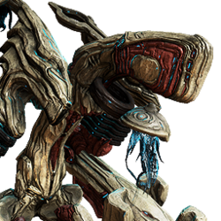

Эйдолонский Тералист - это огромный боевой дрон Владеющих Разумом, который может появиться на локации Равнины Эйдолона в ночное время суток. Несмотря на невысокий уровень (перманентно 50) представляет из себя серьезную угрозу, с которой будет крайне нелегко справиться отряду неподготовленных Тэнно.
Тералист имеет чудовищно высокие показатели здоровья и щитов, и кроме того - в бою с ним вам придется сражаться еще и с дронами - Вомвалистами, которые как атакуют вас, так и помогают Тералисту, восстанавливая его щиты (на 2 и последующих фазах боя). В отличие от других дронов Владеющих Разумом, Тералист не обладает адаптацией к разным типам урона, но ему это и не особо необходимо.
Несмотря на огромные размеры и низкую скорость передвижения, недооценивать его не стоит. Тералист пользуется самонаводящимися снарядами и мощными атаками по площади, которые могут как быстро вывести из строя Варфреймов, так и откидывать их на приличные расстояния. На случай, если этого окажется недостаточно, Тералист умеет обрушивать на врагов мощные орбитальные удары, да и Вомвалисты будут совершенно не против пострелять в Тэнно.
Эйдолонский Тералист

Способности
- Удар по земле: после непродолжительного замаха ногой с силой сотрясает землю, отбрасывая Варфреймов и Операторов подальше. Ударную волну можно перепрыгнуть или перелететь.
- Сокрушающий удар: ударив рукой о землю начинает серию подземных взрывов, которые могут быстро вывести Варфреймов и Операторов из боя. Лучший способ противодействовать этому навыку - переместиться в другое место.
- Взмах пушкойspan>: левая рука Тералиста начинает идти по широкой дуге, осыпая окрестности снарядами. Под эту атаку крайне тяжело попасть.
- Взмах рукой: правая рука Тералиста начинает идти по широкой дуге, тем самым нанося мощный физический урон всем, кто под нее попадет. Наносит приличное количество урона, но от этой атаки легко уйти.
- Снаряды-искатели: вызывает небольшой шар света, который зависает на месте и через некоторое время исторгает несколько самонаводящихся снарядов. Снаряды летают быстро, поэтому на поздних этапах сражения эта способность может причинить ощутимый вред из-за плотности залпа.
- Ливень снарядовspan>: мощная атака, которую Тералист начинает применять на третьем этапе сражения. Посылает в воздух снаряд, который через некоторое время расщепляется на части и падает на землю шквалом плазмы и стали. От этой атаки сложно увернуться, однако нахождение в воздухе существенно снизит ваш шанс погибнуть. Равно как и нахождение в "режиме бездны" Оператором.
- Призыв дронов: призывает от двух Вомвалистов, которые помогают ему в сражении. Начиная с третьего этапа, дронов становится больше, и они могут восстанавливать Тералисту щиты.
- Энергетические волны: при уничтожении игроками любой из синовий Тералиста, босс замрет, впитывая в себя энергию, и затем испустит пять энергетических волн, накладывающих Магнит черный магнитный статус. Каждая волна наносит по 1000 урона, пережить Варфреймом их достаточно сложно, в Режиме Бездны на Оператора также накладывается магнит. Вариантов избежать волн три: отбежать подальше,использовать способность Харроу "Завет", который сделает команду неуязвимой на короткое время, или войти в Катаклизм Лимбо.